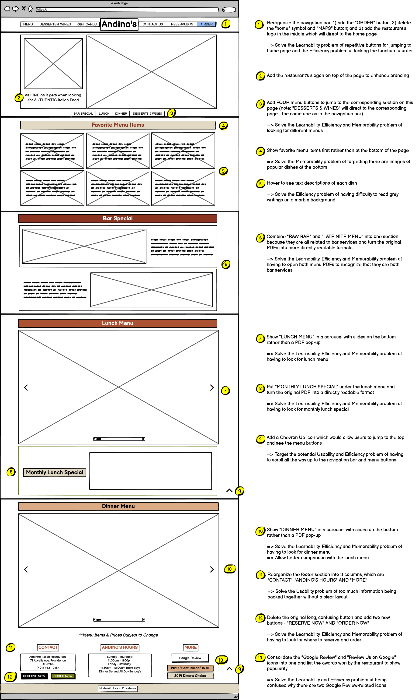
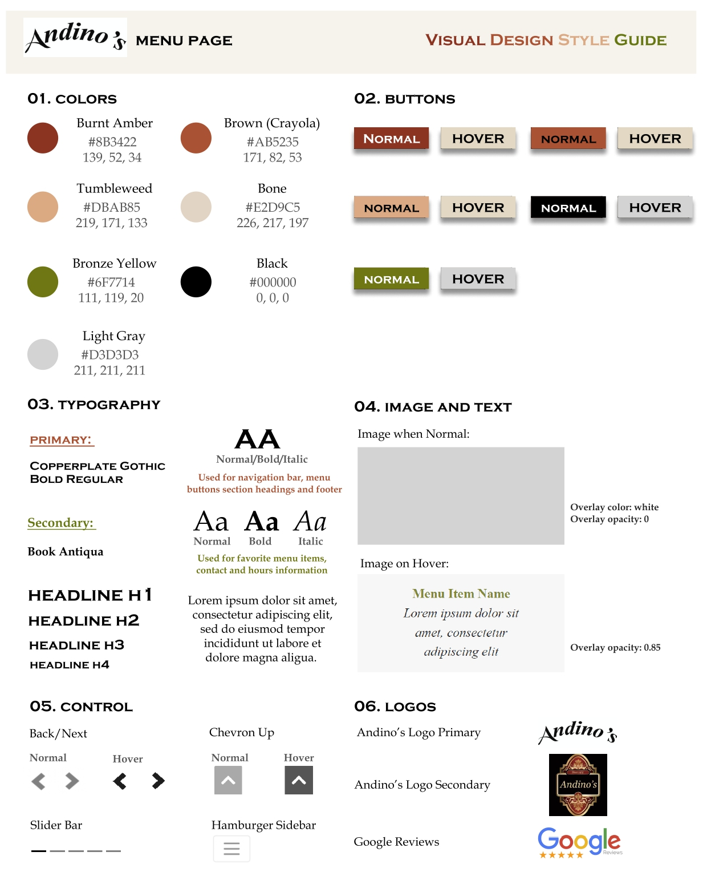

Reimaging Authentic Italian Food in Providence
Redesign of Andino's Menu Page
Andino's is one of my favorite Italian restaurants in Federal Hill, Providence. However, I have always found its menu page hard to navigate. To both improve my own user experience and help the restaurant attract more traffic, I decide to redesign Andino's Menu page.
I. Original Website: Usability and Accessibility Problems
II. Low-Fidelity Wireframes: Responsiveness and Improvements
Using Balsamiq, I sketched three low-fidelity wireframes for Andino's Menu Page in Desktop, Tablet and Phone View. While the navigation bar, footer section and the favorite menu item section are laid out differently in smaller screen sizes, most of the design remains the same in all three views despite changes in font size, margins and paddings. Annotations are made next to different elements to explain where and how my design solve the usability problems of the original website.
Desktop View
Tablet and Phone View
III. High-Fidelity Prototypes: One Step Further
Using Figma, I created three high-fidelity prototypes for Andino's Menu Page in Desktop, Tablet and Phone View. Annotations are made next to different elements to explain my design choices and responsiveness considerations.
Desktop (left), Tablet (middle) and Phone (right) View

Annotations (click "next/prev" arrows or the slide bar to see all)
Elements that are Different in Tablet/Phone View
IV. Redesigned Menu Page
Click HERE to see the redesigned menu page for Andino's!
Observations upon testing using different tools:
V. Visual Design Style Guide
Here is the style guide for my design which provides guidance for the color scheme, buttons, typography, logos, icons and other interactive elements implemented.
